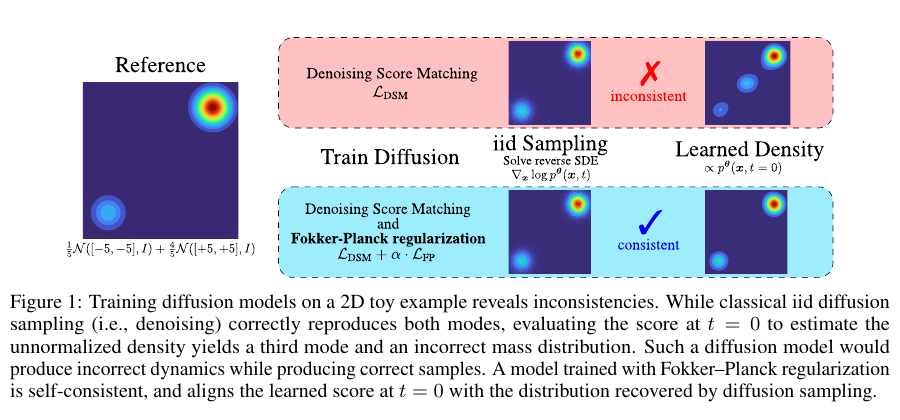
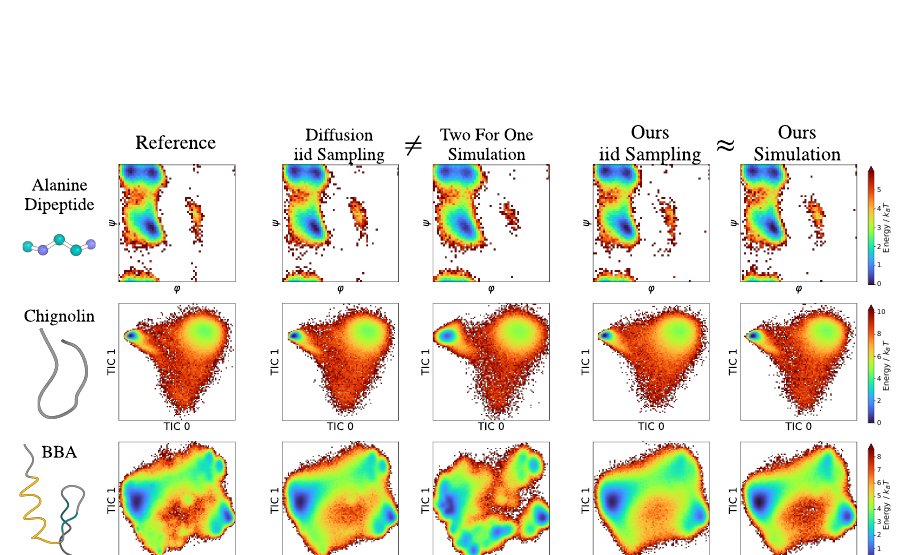

五事实
检验无条件样本的收益尾部、波动聚集、成交量与横截面分布。这只对应“看起来像”。
Reading · NeurIPS 2025
完整反向扩散可生成独立样本 p(x)；把 t=0 的 score 解释为势能力并运行 Langevin 动力学，则得到 p₀(x)。理论上两者应一致，实践中却可能分离：训练平均目标允许小时间端点出现误差，局部误差在递归模拟中累积。

这个二维例子把论点压到最小：只看 iid 样本会判定模型通过；把模型当作局部力反复推进，却得到错误稳态。一次预测中的小误差不显眼，递推后会改变概率质量甚至创造不存在的状态。
作者在去噪损失之外惩罚 Fokker–Planck 方程残差，使不同扩散时间上的密度变化属于同一个合法随机过程。正则重点作用于最容易不稳定的小时间区域。对 Meta 的启示不是照搬方程，而是为递归运行的转移算子增加过程一致性约束。
更强的一致性正则可以改善 simulation，却可能轻微降低 iid sample 指标。静态拟合与动力学拟合应并列报告，而不是揉成一个总分。

检验无条件样本的收益尾部、波动聚集、成交量与横截面分布。这只对应“看起来像”。
检验给定价差、深度、库存和代理状态后的下一步订单类型、方向、成交与撤单分布。
固定新闻或流动性冲击，重复整条路径，比较峰值、半衰期、超调和跨资产传播。
第一层通过不能推出第二、三层正确。Meta 作为模拟器使用时，代理、订单和市场状态持续反馈，因此转移核和递归路径必须单独验收。
这篇论文最重要的不是某个扩散技巧，而是一个验证反例：一个模型能生成正确的独立样本，却导出错误的长期动力学。对应到 Meta，五事实只是 iid 侧证据；订单状态转移和冲击响应属于 process 侧。后续版本应把三层指标分开呈现，并检查递归运行后的稳态漂移。